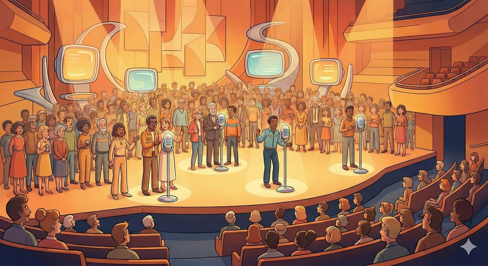
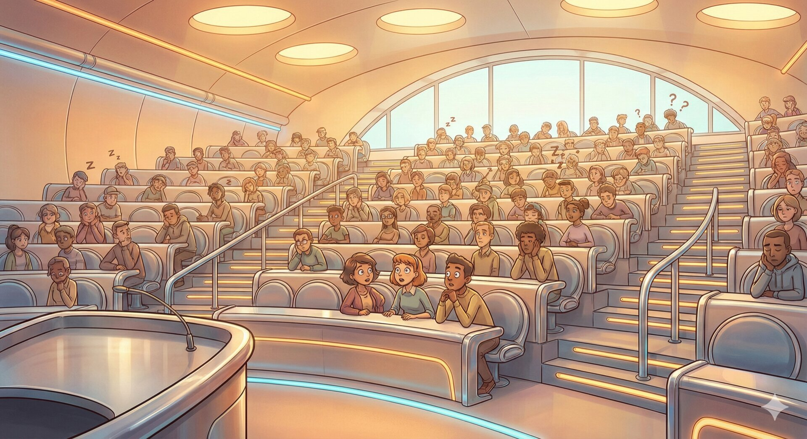
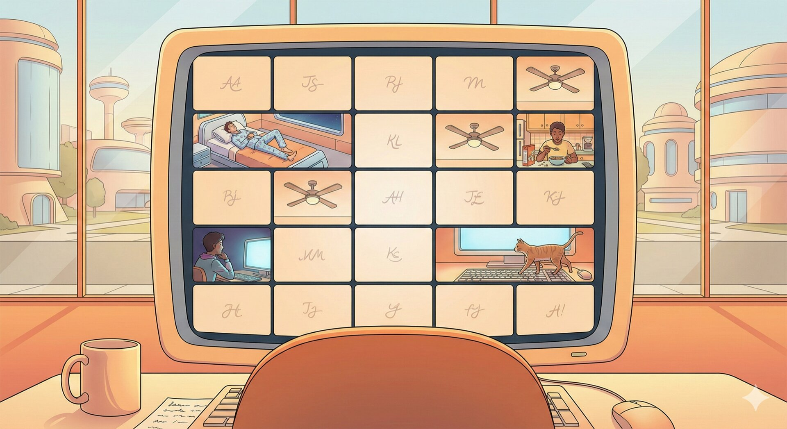

The Educational Engineer
Geoffrey Challen > 11 February 2026
Follow Along
Frequent Small Assessment

Solve, Learn, Repeat
Through the Pandemic

Interactive Walkthroughs

The Trajectory

AI v. the Assignment

Your Ideas Talking
Conversational Assessment

The Horizon
Frequent Small Assessment
The Problems with High-Stakes Exams
The Problems with High-Stakes Exams
Frequent Small Assessment
Why Frequent Small Assessment?
Students Do Better
Our experience shows measured improvement in performance with frequent small assessment compared to high-stakes exams. Short-term memory is the ultimate confounder with high-stakes exams.
Help Students Not Get Behind
Assessment frequency limits how far students can unknowingly fall behind. Eight weeks in is too late; two weeks in is salvageable.
Student-Friendly Grading
More data enables dropping low scores, second-chance assessments, and catch-up grading — universal design, not special accommodations.
Probably Less Stressful
Frequent assessment becomes routine; high-stakes exams are always unusual. Combined with friendly policies and preparation support, overall stress is lower.
Preparation Drives Learning
Students prepare for assessments, and preparation drives learning. Spaced preparation mirrors spaced repetition, one of the most effective learning strategies.
Support Students Proactively
Frequent data lets you spot and approach struggling students early, replicating the feeling of a small class even at scale.
Students Learn How to Learn
More assessments give students more chances to develop effective study habits, especially combined with policies like dropping low scores.
Course Feels Easier
By scaffolding effort, students achieve more while feeling like they are doing less. One mile a day for 30 days feels easier than 30 miles in one day.
Supports Successful Strategies
Design your grade structures to match how you'd tell a student to succeed. Frequent small deadlines mirror real-world work better than midterm + final.
Improves Course Design
Data from tightly-scoped assessments points directly at problems with course sequencing and pacing, enabling rapid iteration.
Support Student Preparation
Telling students what is on the quiz is OK — it helps them prepare and reduces anxiety. Every quiz can have a practice version.
Simplifies Administration
Absences accommodated by drops — no more doctor's notes. Frequent doesn't mean rigid; build in flexibility.
Rigor and Flexibility
High Stakes (4 hours proctored)
MT
Final
Frequent Small Assessment (15 hours proctored)
Q0
Q1
Q2
Q3
Q4
Q5
Q6
Q7
Q8
Q9
Q10
Q11
Q12
Q13
Q14
Retake Windows
W0
W1
W2
W3
W4
W5
W6
W7
W8
W9
W10
W11
W12
W13
Dropping Low Scores
Institutional Support

Solve, Learn, Repeat
The Authoring Bottleneck
/**
* A class that implements a Connect4-like game.
* <p>
* ConnectN is a tile-based game played on a grid. Like Connect4, players try to get a run of tiles
* of a given length (N). However, unlike Connect4 ConnectN does not check diagonal runs, although
* you can add this feature if you like.
* <p>
* This ConnectN class is also not responsible for tracking players turns. That could be done by a
* separate class, allowing for game variations in which players can sometimes take more than one
* turn in a row. Other variations allow more than two players. In any case, the ConnectN class only
* monitors game play to determine when the game has ended and returns the winning player.
*
* @see <a href="https://cs125.cs.illinois.edu/MP/3/">MP3 Documentation</a>
*/
public class ConnectN {
/** Minimum board width is 6. */
public static final int MIN_WIDTH = 6;
/** Maximum board width is 16. */
public static final int MAX_WIDTH = 16;
/** Minimum board height is 6. */
public static final int MIN_HEIGHT = 6;
/** Maximum board height is 16. */
public static final int MAX_HEIGHT = 16;
/** Minimum board N value is 4. */
public static final int MIN_N = 4;
/** The total number of games that have been created. */
private static int totalGames = 0;
/**
* Return the total number of games that have been created.
*
* @return the total number of games that have been created.
*/
public static int getTotalGames() {
return totalGames;
}
/** Current board width. */
private int width;
/**
* Get the current board width.
*
* @return the current board width
*/
public int getWidth() {
return width;
}
/**
* Attempt to set the board width.
* <p>
* Fails if the width is invalid, or if the game has already started. If the new width would
* cause the current N value to become invalid, setWidth should reset the current N value to
* zero.
*
* @param setWidth the new width to set
* @return true if the width was set successfully, false on error
*/
public boolean setWidth(final int setWidth) {
if (active || setWidth < MIN_WIDTH || setWidth > MAX_WIDTH) {
return false;
}
width = setWidth;
int bound = Math.max(width, height);
if (n > bound - 1) {
n = 0;
}
return true;
}
/** Current board height. */
private int height;
/**
* Get the current board height.
*
* @return the current board height
*/
public int getHeight() {
return height;
}
/**
* Attempt to set the board height.
* <p>
* Fails if the height is invalid, or if the game has already started. If the new height would
* cause the current N value to become invalid, setHeight should reset the current N value to
* zero.
*
* @param setHeight the new height to set
* @return true if the height was set successfully, false on error
*/
public boolean setHeight(final int setHeight) {
if (active || setHeight < MIN_HEIGHT || setHeight > MAX_HEIGHT) {
return false;
}
height = setHeight;
int bound = Math.max(width, height);
if (n > bound - 1) {
n = 0;
}
return true;
}
/** Current board N value. This is the number of tiles in a row you need to win. */
private int n;
/**
* Get the current board N value.
*
* @return the current board N value
*/
public int getN() {
return n;
}
/**
* Attempt to set the current board N value.
* <p>
* Note that:
* <ul>
* <li>N cannot be set after the game has started</li>
* <li>N cannot be set before the width or the height</li>
* <li>N cannot be less than 4</li>
* <li>N can be at most 1 less than the maximum of the width and height</li>
* </ul>
* <p>
* Games with large N values relative to their dimension are fairly uninteresting, since it is
* trivial for a player to block their opponent and cause a draw. But you should only enforce
* the constraint that the N value is at most 1 less than the maximum of the width and height.
* So on a 6x10 board, the minimum N value is 4 and the maximum is 9. On a 10x8 board, the
* minimum is 4 and the maximum is 9.
* <p>
* Setting N should never affect the width or the height.
*
* @param newN the new N
* @return true, if successful
*/
public boolean setN(final int newN) {
int bound = Math.max(width, height);
if (active || newN < MIN_N || width == 0 || height == 0 || newN > bound - 1) {
return false;
}
n = newN;
return true;
}
/** Monotonically-increasing ID to uniquely identify this board. */
private final int id;
/**
* Get the current board's id.
*
* @return the current board's id
*/
public int getID() {
return id;
}
/**
* Creates a new ConnectN board with a given width, height, and N value.
* <p>
* Note that this method should not reject invalid values. Constructors must return a new
* object, or throw an exception, so there is no way for you to reject bad parameters yet.
* Instead, attempts to set the width, height, or N value to invalid value should lead to them
* being uninitialized.
* <p>
* For example, new ConnectN(1, 10, 4) should return a ConnectN game with
* width=0, height=10, and N=0, since 1 is an invalid width (too small) and N cannot be set
* until the width is defined.
* <p>
* Each call to any ConnectN constructor should also track the total number of games that have
* been created, which can be retrieved by {@link #getTotalGames() getTotalGames()}. Each board
* should also receive a unique ID equal to the number of games minus 1. So the first board gets
* 0, etc. This should be returned by {@link #getID() getID()}.
*
* @param setWidth the width for the new ConnectN board
* @param setHeight the height for the new ConnectN board
* @param setN the N value for the new ConnectN board
*/
public ConnectN(final int setWidth, final int setHeight, final int setN) {
this.id = totalGames++;
this.setWidth(setWidth);
this.setHeight(setHeight);
this.setN(setN);
}
/**
* Create a new ConnectN board with uninitialized width, height, and N value.
*/
public ConnectN() {
this(0, 0, 0);
}
/**
* Create a new ConnectN board with given width and height and uninitialized N value.
* <p>
* See the notes for the width, height, N ConnectN constructor.
*
* @param setWidth the width for the new ConnectN board
* @param setHeight the height for the new ConnectN board
*/
public ConnectN(final int setWidth, final int setHeight) {
this(setWidth, setHeight, 0);
}
/**
* Create a new ConnectN board with dimensions and N value copied from another board.
* <p>
* This is a so-called <i>copy constructor</i>. It takes another object of the same type (in
* this case, a ConnectN board) and initializes a new object using values from the existing
* object. In this case, you should use the width, height, and N value from the passed board.
* You should not copy any other features of the other board: it's title, it's board state, etc.
* You should also not copy the board ID. This creates a copy, not the same board.
*
* @param otherBoard the ConnectN board to copy width, height, and N from
*/
@SuppressWarnings("CopyConstructorMissesField")
public ConnectN(final ConnectN otherBoard) {
this(otherBoard.getWidth(), otherBoard.getHeight(), otherBoard.getN());
}
/**
* Tracks whether the game has started. After it has, no changes to the dimensions or N are
* allowed.
*/
private boolean active = false;
/** Tracks the state of the board. */
private Player[][] board;
/**
* Set the board at a specific position.
* <p>
* Allows a player to attempt to place a tile at a specific location on the board. If the move
* is successful, the board should track that this player has played at this location so that it
* can determine a winner and prevent future invalid moves.
* <p>
* A move should fail and return false if:
* <ul>
* <li>any board parameters remain uninitialized, including width, height, and N</li>
* <li>the player is invalid</li>
* <li>the position is invalid for this board</li>
* <li>the game has already ended</li>
* </ul>
* <p>
* This function also needs to enforce the rules of ConnectN. A tile cannot be played at a
* particular location if there are empty squares below it. Put another way, a tile can only be
* placed on top of a stack of existing tiles. If the requested location is invalid, you should
* return false and no tile should be added to the board.
* <p>
* If a given play results in the game ending, future plays should fail and {@link #getWinner()
* getWinner()} should return the player that won.
* <p>
* Note that the first successful call to setBoardAt represents the start of
* game.
*
* @param player the player attempting the move
* @param setX the X coordinate that they are trying to place a tile at
* @param setY the Y coordinate that they are trying to place a tile at
* @return true if the move succeeds, false on error
*/
public boolean setBoardAt(final Player player, final int setX, final int setY) {
if (setX < 0 || width <= setX || setY < 0 || height <= setY || n == 0 || player == null
|| winner != null) {
return false;
}
if (!active) {
board = new Player[width][height];
active = true;
}
if (board[setX][setY] != null) {
return false;
}
for (int y = setY - 1; y >= 0; y--) {
if (board[setX][y] == null) {
return false;
}
}
board[setX][setY] = player;
gameOver();
return true;
}
/**
* Drop a tile in a particular column.
* <p>
* This method is similar to {@link #setBoardAt(Player, int, int) setBoardAt(player, x, y)}, but
* it does not specify a Y coordinate. Instead, it allows a player to try to drop a tile on the
* stack with the given X value.
* <p>
* This method should fail for the same reasons as {@link #setBoardAt(Player, int, int)
* setBoardAt(player, x, y)}. It should also fail if this stack is full and cannot accept any
* additional tiles. It should also ensure that {@link #getWinner() getWinner()} returns the
* correct value after every play.
* <p>
* Note that the first successful call to setBoardAt represents the start of
* game.
*
* @param player the player attempting the move
* @param setX the X coordinate for the stack that they are trying to drop a tile in
* @return true if the move succeeds, false on error
*/
public boolean setBoardAt(final Player player, final int setX) {
if (setX < 0 || width <= setX || height == 0 || n == 0 || player == null
|| winner != null) {
return false;
}
if (!active) {
board = new Player[width][height];
active = true;
}
for (int y = 0; y < height; y++) {
if (board[setX][y] == null) {
board[setX][y] = player;
gameOver();
return true;
}
}
return false;
}
/**
* Get the player at a specific board position.
* <p>
* Should return null if the board position is invalid, if the game has not started, or if
* nobody has played yet at that position. Otherwise returns the player whose tile is at that
* position.
*
* @param getX the X coordinate to get the player at
* @param getY the Y coordinate to get the player at
* @return the player whose tile is at that position, or null or error or if nobody has played
* at that position
*/
public Player getBoardAt(final int getX, final int getY) {
if (!active) {
return null;
}
if (0 <= getX && getX < width && 0 <= getY && getY < height) {
return board[getX][getY];
} else {
return null;
}
}
/**
* Return a copy of the board.
* <p>
* Once the width and height are set, this function should not return null. Until then, it
* should return null.
* <p>
* Note that this function should not expose the private board instance variable. Any changes to
* the board or players returned should not affect the state maintained by the class.
*
* @return a copy of the current board
*/
public Player[][] getBoard() {
if (width == 0 || height == 0) {
return null;
}
Player[][] returnArray = new Player[width][height];
for (int x = 0; x < width; x++) {
for (int y = 0; y < height; y++) {
if (board != null && board[x][y] != null) {
returnArray[x][y] = new Player(board[x][y]);
} else {
returnArray[x][y] = null;
}
}
}
return returnArray;
}
/** Set to the game winner once it ends. */
private Player winner = null;
/**
* Return the winner of the game, or null if the game has not ended.
*
* @return the winner of the game, or null if the game has not ended
*/
public Player getWinner() {
return winner;
}
/**
* Determine if the game has ended.
* <p>
* This is a private helper function used by the board modification functions to check to see if
* the game has ended.
*/
private void gameOver() {
for (int x = 0; x < width; x++) {
int count = 0;
Player previousPlayer = null;
for (int y = 0; y < height; y++) {
Player currentPlayer = board[x][y];
if (previousPlayer != null && previousPlayer.equals(currentPlayer)) {
count++;
if (count == n - 1) {
winner = currentPlayer;
currentPlayer.addScore();
return;
}
} else {
count = 0;
}
previousPlayer = currentPlayer;
}
}
for (int y = 0; y < height; y++) {
int count = 0;
Player previousPlayer = null;
for (int x = 0; x < width; x++) {
Player currentPlayer = board[x][y];
if (previousPlayer != null && previousPlayer.equals(currentPlayer)) {
count++;
if (count == n - 1) {
winner = currentPlayer;
currentPlayer.addScore();
return;
}
} else {
count = 0;
}
previousPlayer = currentPlayer;
}
}
}
/**
* Class method to create a new ConnectN board.
* <p>
* Unlike the class constructor, static methods can return null on failure. Sometimes these
* methods are referred to as <i>static factory methods</i>.
* <p>
* This method should return null if its arguments are invalid. Otherwise, it should return a
* new ConnectN instance.
*
* @param width the width of the new ConnectN instance to create
* @param height the height of the new ConnectN instance to create
* @param n the n value of the new ConnectN instance to create
* @return the new ConnectN instance, or null if the parameters are invalid
*/
public static ConnectN create(final int width, final int height, final int n) {
ConnectN[] newBoard = createMany(1, width, height, n);
if (newBoard == null) {
return null;
} else {
return newBoard[0];
}
}
/**
* Creates multiple new ConnectN instances.
* <p>
* Like {@link #create(int, int, int) create()}, createMany should return null if the parameters
* are invalid. Otherwise, it should return an array of newly-created ConnectN instances.
*
* @param number the number of new ConnectN instances to create
* @param width the width of the new ConnectN instance to create
* @param height the height of the new ConnectN instance to create
* @param n the n value of the new ConnectN instance to create
* @return an array of new ConnectN instances, or null if the parameters are invalid or if asked to create
* zero boards
*/
public static ConnectN[] createMany(final int number, final int width, final int height,
final int n) {
if (number <= 0 || width < MIN_WIDTH || MAX_WIDTH < width //
|| height < MIN_HEIGHT || MAX_HEIGHT < height //
|| n < MIN_N || !(n < width || n < height)) {
return null;
}
ConnectN[] returnArray = new ConnectN[number];
for (int i = 0; i < number; i++) {
returnArray[i] = new ConnectN(width, height, n);
}
return returnArray;
}
/**
* Compare two ConnectN boards.
* <p>
* This method should compare two ConnectN boards. Two boards are equal if:
* <ul>
* <li>they have the same dimensions</li>
* <li>they have the same n value</li>
* <li>they have tiles by the same players in the same position</li>
* </ul>
* <p>
* Note that this is different from the {@link #equals(Object) equals} method for the
* ConnectN class, which should test for the same ID. You can also use the
* {@link Player#equals(Object) Player.equals} method to compare two players.
*
* @param firstBoard the first ConnectN board to compare
* @param secondBoard the second ConnectN board to compare
* @return true if the boards are the same, false otherwise
*/
public static boolean compareBoards(final ConnectN firstBoard, final ConnectN secondBoard) {
if (firstBoard == secondBoard) {
return true;
}
if (firstBoard == null || secondBoard == null) {
return false;
}
if (firstBoard.getWidth() != secondBoard.getWidth() //
|| firstBoard.getHeight() != secondBoard.getHeight() //
|| firstBoard.getN() != secondBoard.getN()) {
return false;
}
if (firstBoard.getWidth() == 0 || firstBoard.getHeight() == 0 || firstBoard.getN() == 0) {
return true;
}
Player[][] boardOne = firstBoard.getBoard();
Player[][] boardTwo = secondBoard.getBoard();
for (int x = 0; x < firstBoard.getWidth(); x++) {
for (int y = 0; y < firstBoard.getHeight(); y++) {
if ((boardOne[x][y] == null && boardTwo[x][y] != null) //
|| (boardTwo[x][y] == null && boardOne[x][y] != null)) {
return false;
}
if ((boardOne[x][y] == null) && (boardTwo[x][y] == null)) {
continue;
}
if (!(boardOne[x][y].equals(boardTwo[x][y]))) {
return false;
}
}
}
return true;
}
/**
* Compare any number of ConnectN boards.
* <p>
* This methods takes a variadic number of arguments. It should return true if <i>all</i> the
* boards are the same. See the notes on {@link #compareBoards(ConnectN, ConnectN)
* compareBoards(first, second)} for a definition of board equality.
*
* @param boards the array of ConnectN boards to compare
* @return true if all passed boards are the same, false otherwise
*/
public static boolean compareBoards(final ConnectN... boards) {
if (boards.length <= 1) {
return true;
}
ConnectN firstBoard = boards[0];
for (int i = 1; i < boards.length; i++) {
if (!ConnectN.compareBoards(firstBoard, boards[i])) {
return false;
}
}
return true;
}
/**
* Define the hash code for the ConnectN class.
* <p>
* This method should only use the id field of the instance. Note that IntelliJ can auto-generate
* this and {@link #equals(Object) equals}.
*
* @see java.lang.Object#hashCode()
*/
@Override
public final int hashCode() {
final int prime = 31;
int result = 1;
result = prime * result + id;
return result;
}
/**
* Define equality for the ConnectN class.
* <p>
* This method should only use the id field of the instance. Note that IntelliJ can auto-generate
* this and {@link #hashCode() hashCode()}.
*
* @see java.lang.Object#equals(java.lang.Object)
*/
@Override
public boolean equals(final Object obj) {
if (this == obj) {
return true;
}
if (obj == null) {
return false;
}
if (getClass() != obj.getClass()) {
return false;
}
ConnectN other = (ConnectN) obj;
return id == other.id;
}
}Specification: 269 Lines of Code
import java.lang.reflect.Field;
import java.util.Random;
import org.testng.Assert;
import org.testng.annotations.Test;
/**
* Test suite for the ConnectN class.
* <p>
* The provided test suite is correct and complete. You should not need to modify it. However, you
* should understand it. You will need to augment or write test suites for later MPs.
*
* @see <a href="https://cs125.cs.illinois.edu/MP/3/">MP3 Documentation</a>
*/
@SuppressWarnings({"checkstyle:magicnumber"})
public class ConnectNTest {
private final Random random = new Random();
/** Timeout for all tests. These should be quite quick. */
private static final int TEST_TIMEOUT = 100;
/**
* Test simple width getters and setters.
*/
@Test(priority = 1, timeOut = TEST_TIMEOUT)
public void testGetAndSetWidth() {
final String setBoardWidth = "Should be able to set board width";
final String notSetCorrectly = "Board width not set correctly";
final String invalidBoardWidth = "Should not be able to set invalid board width";
final String invalidReset = "Invalid set should not reset previous width";
final String widthIsStatic = "Board width should not be static";
final String widthIsPublic = "Board width should not be public";
ConnectN board = new ConnectN();
Assert.assertEquals(ConnectN.MAX_WIDTH, 16, "Read the spec, MAX_WIDTH is wrong");
/*
* Test valid widths.
*/
Assert.assertTrue(board.setWidth(7), setBoardWidth);
Assert.assertEquals(board.getWidth(), 7, notSetCorrectly);
Assert.assertTrue(board.setWidth(13), setBoardWidth);
Assert.assertEquals(board.getWidth(), 13, notSetCorrectly);
/*
* Test invalid widths.
*/
Assert.assertFalse(board.setWidth(0), invalidBoardWidth);
Assert.assertEquals(board.getWidth(), 13, invalidReset);
Assert.assertFalse(board.setWidth(-9), invalidBoardWidth);
Assert.assertEquals(board.getWidth(), 13, invalidReset);
Assert.assertFalse(board.setWidth(3), invalidBoardWidth);
Assert.assertEquals(board.getWidth(), 13, invalidReset);
Assert.assertFalse(board.setWidth(2001), invalidBoardWidth);
Assert.assertEquals(board.getWidth(), 13, invalidReset);
/*
* Make sure width still works.
*/
Assert.assertTrue(board.setWidth(7), setBoardWidth);
Assert.assertEquals(board.getWidth(), 7, notSetCorrectly);
/*
* Make sure width is not static.
*/
ConnectN anotherBoard = new ConnectN();
Assert.assertTrue(anotherBoard.setWidth(9), setBoardWidth);
Assert.assertEquals(anotherBoard.getWidth(), 9, notSetCorrectly);
Assert.assertEquals(board.getWidth(), 7, widthIsStatic);
Assert.assertTrue(board.setWidth(11), setBoardWidth);
Assert.assertEquals(anotherBoard.getWidth(), 9, widthIsStatic);
Assert.assertEquals(board.getWidth(), 11, notSetCorrectly);
/*
* Make sure width is not public.
*/
Class<?> connectNClass = board.getClass();
Field[] publicFields = connectNClass.getFields();
for (Field field : publicFields) {
try {
int publicWidth = field.getInt(board);
Assert.assertNotEquals(publicWidth, 11, widthIsPublic);
publicWidth = field.getInt(anotherBoard);
Assert.assertNotEquals(publicWidth, 9, widthIsPublic);
} catch (Exception ignored) {
}
}
}
/**
* Test simple height getters and setters.
*/
@Test(priority = 1, timeOut = TEST_TIMEOUT)
public void testGetAndSetHeight() {
final String setBoardHeight = "Should be able to set board height";
final String notSetCorrectly = "Board height not set correctly";
final String invalidBoardHeight = "Should not be able to set invalid board height";
final String invalidReset = "Invalid set should not reset previous height";
final String heightIsStatic = "Board height should not be static";
final String heightIsPublic = "Board height should not be public";
/*
* Test MAX_HEIGHT.
*/
ConnectN board = new ConnectN();
Assert.assertEquals(ConnectN.MAX_HEIGHT, 16, "Read the spec, MAX_HEIGHT is wrong");
/*
* Test valid heights.
*/
Assert.assertTrue(board.setHeight(6), setBoardHeight);
Assert.assertEquals(board.getHeight(), 6, notSetCorrectly);
Assert.assertTrue(board.setHeight(12), setBoardHeight);
Assert.assertEquals(board.getHeight(), 12, notSetCorrectly);
/*
* Test invalid heights.
*/
Assert.assertFalse(board.setHeight(0), invalidBoardHeight);
Assert.assertEquals(board.getHeight(), 12, invalidReset);
Assert.assertFalse(board.setHeight(-1), invalidBoardHeight);
Assert.assertEquals(board.getHeight(), 12, invalidReset);
Assert.assertFalse(board.setHeight(4), invalidBoardHeight);
Assert.assertEquals(board.getHeight(), 12, invalidReset);
Assert.assertFalse(board.setHeight(1000), invalidBoardHeight);
Assert.assertEquals(board.getHeight(), 12, invalidReset);
/*
* Make sure height still works.
*/
Assert.assertTrue(board.setHeight(6), setBoardHeight);
Assert.assertEquals(board.getHeight(), 6, notSetCorrectly);
/*
* Make sure height is not static.
*/
ConnectN anotherBoard = new ConnectN();
Assert.assertTrue(anotherBoard.setHeight(8), setBoardHeight);
Assert.assertEquals(anotherBoard.getHeight(), 8, notSetCorrectly);
Assert.assertEquals(board.getHeight(), 6, heightIsStatic);
Assert.assertTrue(board.setHeight(10), setBoardHeight);
Assert.assertEquals(anotherBoard.getHeight(), 8, heightIsStatic);
Assert.assertEquals(board.getHeight(), 10, notSetCorrectly);
/*
* Make sure height is not public.
*/
Class<?> connectNClass = board.getClass();
Field[] publicFields = connectNClass.getFields();
for (Field field : publicFields) {
try {
int publicHeight = field.getInt(board);
Assert.assertNotEquals(publicHeight, 10, heightIsPublic);
publicHeight = field.getInt(anotherBoard);
Assert.assertNotEquals(publicHeight, 8, heightIsPublic);
} catch (Exception ignored) {
}
}
}
/**
* Test simple N getters and setters.
*/
@Test(priority = 1, timeOut = TEST_TIMEOUT)
public void testGetAndSetN() {
final String earlySetN = "Should not be able to set board N value before width and height";
final String setBoardN = "Should be able to set board N value";
final String notSetCorrectly = "Board N value not set correctly";
final String invalidBoardN = "Should not be able to set invalid board N value";
final String invalidReset = "Invalid set should not reset previous N value";
final String invalidDimensionReset = "Changing width and height should not reset N";
final String missingDimensionReset = "Changing width and height should reset N";
final String nIsStatic = "Board N value should not be static";
final String nIsPublic = "Board N value should not be public";
/*
* Test MAX_WIDTH.
*/
ConnectN board = new ConnectN();
Assert.assertEquals(ConnectN.MIN_N, 4, "Read the spec, MIN_N is wrong");
/*
* Test setting N before width and height.
*/
Assert.assertFalse(board.setN(4), earlySetN);
Assert.assertTrue(board.setWidth(8));
Assert.assertFalse(board.setN(4), earlySetN);
Assert.assertTrue(board.setHeight(8));
/*
* Test valid N.
*/
Assert.assertTrue(board.setN(4), setBoardN);
Assert.assertEquals(board.getN(), 4, notSetCorrectly);
Assert.assertTrue(board.setN(6), setBoardN);
Assert.assertEquals(board.getN(), 6, notSetCorrectly);
Assert.assertTrue(board.setN(7), setBoardN);
Assert.assertEquals(board.getN(), 7, notSetCorrectly);
/*
* Test invalid N.
*/
Assert.assertFalse(board.setN(10), invalidBoardN);
Assert.assertEquals(board.getN(), 7, invalidReset);
Assert.assertFalse(board.setN(1), invalidBoardN);
Assert.assertEquals(board.getN(), 7, invalidReset);
Assert.assertFalse(board.setN(0), invalidBoardN);
Assert.assertEquals(board.getN(), 7, invalidReset);
Assert.assertFalse(board.setN(-1), invalidBoardN);
Assert.assertEquals(board.getN(), 7, invalidReset);
Assert.assertFalse(board.setN(8), invalidBoardN);
Assert.assertEquals(board.getN(), 7, invalidReset);
Assert.assertTrue(board.setWidth(9));
Assert.assertFalse(board.setN(9), invalidBoardN);
Assert.assertEquals(board.getN(), 7, invalidReset);
Assert.assertTrue(board.setWidth(8));
/*
* Make sure that changing widths and heights resets N as needed.
*/
Assert.assertEquals(board.getN(), 7);
Assert.assertTrue(board.setWidth(9));
Assert.assertEquals(board.getWidth(), 9);
Assert.assertEquals(board.getN(), 7, invalidDimensionReset);
Assert.assertTrue(board.setHeight(9));
Assert.assertEquals(board.getHeight(), 9);
Assert.assertEquals(board.getN(), 7, invalidDimensionReset);
Assert.assertTrue(board.setWidth(7));
Assert.assertEquals(board.getWidth(), 7);
Assert.assertEquals(board.getN(), 7, invalidDimensionReset);
Assert.assertTrue(board.setHeight(6));
Assert.assertEquals(board.getHeight(), 6);
Assert.assertEquals(board.getN(), 0, missingDimensionReset);
Assert.assertTrue(board.setWidth(10));
Assert.assertTrue(board.setHeight(10));
Assert.assertTrue(board.setN(6), setBoardN);
Assert.assertEquals(board.getN(), 6, notSetCorrectly);
Assert.assertTrue(board.setHeight(6));
Assert.assertTrue(board.setWidth(6));
Assert.assertEquals(board.getHeight(), 6);
Assert.assertEquals(board.getWidth(), 6);
Assert.assertEquals(board.getN(), 0);
Assert.assertTrue(board.setHeight(7));
Assert.assertTrue(board.setWidth(7));
Assert.assertEquals(board.getHeight(), 7);
Assert.assertEquals(board.getWidth(), 7);
Assert.assertTrue(board.setN(6));
Assert.assertEquals(board.getN(), 6);
Assert.assertTrue(board.setWidth(6));
Assert.assertTrue(board.setHeight(6));
Assert.assertEquals(board.getWidth(), 6);
Assert.assertEquals(board.getHeight(), 6);
Assert.assertEquals(board.getN(), 0);
Assert.assertTrue(board.setN(4));
Assert.assertEquals(board.getN(), 4);
/*
* Make sure N is not static.
*/
ConnectN anotherBoard = new ConnectN();
anotherBoard.setWidth(10);
anotherBoard.setHeight(10);
Assert.assertTrue(anotherBoard.setN(8), setBoardN);
Assert.assertEquals(anotherBoard.getN(), 8, notSetCorrectly);
Assert.assertEquals(board.getN(), 4, nIsStatic);
Assert.assertTrue(board.setN(5), setBoardN);
Assert.assertEquals(anotherBoard.getN(), 8, nIsStatic);
Assert.assertEquals(board.getN(), 5, notSetCorrectly);
/*
* Make sure N is not public.
*/
Class<?> connectNClass = board.getClass();
Field[] publicFields = connectNClass.getFields();
for (Field field : publicFields) {
try {
int publicWidth = field.getInt(board);
Assert.assertNotEquals(publicWidth, 5, nIsPublic);
publicWidth = field.getInt(anotherBoard);
Assert.assertNotEquals(publicWidth, 8, nIsPublic);
} catch (Exception ignored) {
}
}
}
/**
* Test ConnectN constructors.
*/
@Test(priority = 1, timeOut = TEST_TIMEOUT)
public void testConstructors() {
final String emptyConstructorSetFields = //
"Empty constructor should not initialize width, height, or N";
final String widthHeightConstructorMissedFields = //
"Width and height constructor should initialize width and height";
final String widthHeightConstructorInvalidFields = //
"Width and height constructor should ignore invalid values";
final String widthHeightConstructorSetN = //
"Width and height constructor should not set N";
final String completeConstructorMissedFields = //
"Complete constructor should initialize width, height, and N";
final String completeConstructorInvalidFields = //
"Complete constructor should ignore invalid values";
final String copyConstructorMissedFields = //
"Copy constructor should copy width, height, and N";
/*
* Test empty constructor.
*/
ConnectN board = new ConnectN();
Assert.assertEquals(board.getWidth(), 0, emptyConstructorSetFields);
Assert.assertEquals(board.getHeight(), 0, emptyConstructorSetFields);
Assert.assertEquals(board.getN(), 0, emptyConstructorSetFields);
/*
* Test width and height constructor with valid values.
*/
board = new ConnectN(6, 8);
Assert.assertEquals(board.getWidth(), 6, widthHeightConstructorMissedFields);
Assert.assertEquals(board.getHeight(), 8, widthHeightConstructorMissedFields);
Assert.assertEquals(board.getN(), 0, widthHeightConstructorSetN);
/*
* Test width and height constructor with invalid values.
*/
board = new ConnectN(-1, 8);
Assert.assertEquals(board.getWidth(), 0, widthHeightConstructorInvalidFields);
Assert.assertEquals(board.getHeight(), 8, widthHeightConstructorMissedFields);
Assert.assertEquals(board.getN(), 0, widthHeightConstructorSetN);
board = new ConnectN(8, 1000);
Assert.assertEquals(board.getWidth(), 8, widthHeightConstructorMissedFields);
Assert.assertEquals(board.getHeight(), 0, widthHeightConstructorInvalidFields);
Assert.assertEquals(board.getN(), 0, widthHeightConstructorSetN);
board = new ConnectN(1000, -1);
Assert.assertEquals(board.getWidth(), 0, widthHeightConstructorInvalidFields);
Assert.assertEquals(board.getHeight(), 0, widthHeightConstructorInvalidFields);
Assert.assertEquals(board.getN(), 0, widthHeightConstructorSetN);
/*
* Test complete constructor with valid values.
*/
board = new ConnectN(6, 8, 4);
Assert.assertEquals(board.getWidth(), 6, completeConstructorMissedFields);
Assert.assertEquals(board.getHeight(), 8, completeConstructorMissedFields);
Assert.assertEquals(board.getN(), 4, completeConstructorMissedFields);
board = new ConnectN(6, 6, 5);
Assert.assertEquals(board.getWidth(), 6, completeConstructorMissedFields);
Assert.assertEquals(board.getHeight(), 6, completeConstructorMissedFields);
Assert.assertEquals(board.getN(), 5, completeConstructorMissedFields);
/*
* Test complete constructor with invalid values.
*/
board = new ConnectN(6, 8, -1);
Assert.assertEquals(board.getWidth(), 6, completeConstructorMissedFields);
Assert.assertEquals(board.getHeight(), 8, completeConstructorMissedFields);
Assert.assertEquals(board.getN(), 0, completeConstructorInvalidFields);
board = new ConnectN(6, -1, 2);
Assert.assertEquals(board.getWidth(), 6, completeConstructorInvalidFields);
Assert.assertEquals(board.getHeight(), 0, completeConstructorInvalidFields);
Assert.assertEquals(board.getN(), 0, completeConstructorInvalidFields);
board = new ConnectN(-1, 10, 6);
Assert.assertEquals(board.getWidth(), 0, completeConstructorInvalidFields);
Assert.assertEquals(board.getHeight(), 10, completeConstructorInvalidFields);
Assert.assertEquals(board.getN(), 0, completeConstructorInvalidFields);
board = new ConnectN(7, -1, 100);
Assert.assertEquals(board.getWidth(), 7, completeConstructorInvalidFields);
Assert.assertEquals(board.getHeight(), 0, completeConstructorInvalidFields);
Assert.assertEquals(board.getN(), 0, completeConstructorInvalidFields);
board = new ConnectN(-1, 13, 1001);
Assert.assertEquals(board.getWidth(), 0, completeConstructorInvalidFields);
Assert.assertEquals(board.getHeight(), 13, completeConstructorInvalidFields);
Assert.assertEquals(board.getN(), 0, completeConstructorInvalidFields);
board = new ConnectN(10, 9, 10);
Assert.assertEquals(board.getWidth(), 10, completeConstructorMissedFields);
Assert.assertEquals(board.getHeight(), 9, completeConstructorMissedFields);
Assert.assertEquals(board.getN(), 0, completeConstructorInvalidFields);
/*
* Test complete constructor with valid values.
*/
board = new ConnectN(8, 7, 6);
ConnectN anotherBoard = new ConnectN(board);
Assert.assertEquals(board.getWidth(), 8, completeConstructorMissedFields);
Assert.assertEquals(anotherBoard.getWidth(), 8, copyConstructorMissedFields);
Assert.assertEquals(board.getHeight(), 7, completeConstructorMissedFields);
Assert.assertEquals(anotherBoard.getHeight(), 7, copyConstructorMissedFields);
Assert.assertEquals(board.getN(), 6, completeConstructorMissedFields);
Assert.assertEquals(anotherBoard.getN(), 6, copyConstructorMissedFields);
}
/**
* Test getting and setting the board at a specific position.
*/
@Test(priority = 1, timeOut = TEST_TIMEOUT)
@SuppressWarnings("checkstyle:methodlength")
public void testGetAndSetBoard() {
final String validSet = "Set at this position should succeed";
final String validGet = "Get at this position should return a player";
final String nullGet = "Get at this position should return null";
final String invalidSet = "Set at this position should fail";
final String gameBoardInitialized = "Game board not properly initialized";
final String gameBoardCopy = "Game board returned a copy";
final String changeAfterStart = "Can't change dimensions afters start";
final String uninitializedBoardGet = //
"Calls to getBoard before initialization should return null";
/*
* Test valid sets and gets.
*/
ConnectN board = new ConnectN(10, 9, 6);
Player player = new Player("Chuchu");
for (int x = 0; x < 10; x++) {
for (int y = 0; y < 9; y++) {
Assert.assertNull(board.getBoardAt(x, y), nullGet);
}
}
Assert.assertNull(board.getBoardAt(0, 0), nullGet);
Assert.assertTrue(board.setBoardAt(player, 0, 0), validSet);
Assert.assertEquals(board.getBoardAt(0, 0), player, validGet);
Assert.assertFalse(board.setWidth(9), changeAfterStart);
Assert.assertEquals(board.getWidth(), 10, changeAfterStart);
Assert.assertFalse(board.setHeight(8), changeAfterStart);
Assert.assertEquals(board.getHeight(), 9, changeAfterStart);
Assert.assertFalse(board.setN(7), changeAfterStart);
Assert.assertEquals(board.getN(), 6, changeAfterStart);
Assert.assertNull(board.getBoardAt(9, 0), nullGet);
Assert.assertTrue(board.setBoardAt(player, 9, 0), validSet);
Assert.assertEquals(board.getBoardAt(9, 0), player, validGet);
Assert.assertNull(board.getBoardAt(7, 0), nullGet);
Assert.assertTrue(board.setBoardAt(player, 7, 0), validSet);
Assert.assertEquals(board.getBoardAt(7, 0), player, validGet);
Assert.assertNull(board.getBoardAt(5, 0), nullGet);
Assert.assertTrue(board.setBoardAt(player, 5, 0), validSet);
Assert.assertEquals(board.getBoardAt(5, 0), player, validGet);
Assert.assertNull(board.getBoardAt(7, 1), nullGet);
Assert.assertTrue(board.setBoardAt(player, 7, 1), validSet);
Assert.assertEquals(board.getBoardAt(7, 1), player, validGet);
Assert.assertNull(board.getBoardAt(7, 2), nullGet);
Assert.assertTrue(board.setBoardAt(player, 7, 2), validSet);
Assert.assertEquals(board.getBoardAt(7, 2), player, validGet);
/*
* Test invalid dimensions.
*/
Assert.assertNull(board.getBoardAt(-1, 0), nullGet);
Assert.assertNull(board.getBoardAt(0, -1), nullGet);
Assert.assertNull(board.getBoardAt(100, 4), nullGet);
Assert.assertNull(board.getBoardAt(5, 99), nullGet);
/*
* Test invalid sets.
*/
board = new ConnectN(8, 7, 4);
player = new Player("Chuchu");
for (int x = 0; x < 7; x++) {
for (int y = 0; y < 7; y++) {
Assert.assertNull(board.getBoardAt(x, y), nullGet);
}
}
Assert.assertFalse(board.setBoardAt(player, 0, 1), invalidSet);
Assert.assertFalse(board.setBoardAt(player, 9, 0), invalidSet);
Assert.assertFalse(board.setBoardAt(player, 7, 6), invalidSet);
Assert.assertFalse(board.setBoardAt(player, 3, 7), invalidSet);
Assert.assertFalse(board.setBoardAt(player, 3, 1), invalidSet);
Assert.assertFalse(board.setBoardAt(player, 3, 2), invalidSet);
for (int x = 0; x < 7; x++) {
for (int y = 0; y < 7; y++) {
Assert.assertNull(board.getBoardAt(x, y), nullGet);
}
}
Assert.assertTrue(board.setBoardAt(player, 3, 0), validSet);
Assert.assertFalse(board.setBoardAt(player, 3, 0), invalidSet);
Assert.assertEquals(board.getBoardAt(3, 0), player, validGet);
Assert.assertTrue(board.setBoardAt(player, 3, 1), validSet);
Assert.assertFalse(board.setBoardAt(player, 3, 0), invalidSet);
Assert.assertEquals(board.getBoardAt(3, 0), player, validGet);
Assert.assertFalse(board.setBoardAt(player, 3, 1), invalidSet);
Assert.assertEquals(board.getBoardAt(3, 1), player, validGet);
/*
* Test drop sets.
*/
board = new ConnectN(10, 6, 8);
for (int x = 0; x < 10; x++) {
for (int y = 0; y < 6; y++) {
Assert.assertNull(board.getBoardAt(x, y), nullGet);
}
}
player = new Player("Chuchu");
Player otherPlayer = new Player("Xyz");
for (int y = 0; y < 6; y++) {
Assert.assertNull(board.getBoardAt(0, y), nullGet);
Assert.assertTrue(board.setBoardAt(player, 0), validSet);
Assert.assertEquals(board.getBoardAt(0, y), player, validGet);
}
Assert.assertFalse(board.setBoardAt(player, 0), invalidSet);
for (int y = 0; y < 6; y++) {
Assert.assertFalse(board.setBoardAt(otherPlayer, 0, y), invalidSet);
Assert.assertEquals(board.getBoardAt(0, y), player, validGet);
}
for (int y = 0; y < 6; y++) {
Assert.assertNull(board.getBoardAt(5, y), nullGet);
Assert.assertTrue(board.setBoardAt(player, 5), validSet);
Assert.assertEquals(board.getBoardAt(5, y), player, validGet);
}
for (int y = 0; y < 6; y++) {
Assert.assertFalse(board.setBoardAt(otherPlayer, 5, y), invalidSet);
Assert.assertEquals(board.getBoardAt(5, y), player, validGet);
}
/*
* Test valid board getters.
*/
ConnectN game = new ConnectN();
Assert.assertNull(game.getBoard(), uninitializedBoardGet);
game.setWidth(10);
Assert.assertNull(game.getBoard(), uninitializedBoardGet);
game.setHeight(10);
Assert.assertNotEquals(game.getBoard(), null, //
"After dimensions are set getBoard should succeed");
game = new ConnectN(10, 6, 8);
player = new Player("Chuchu");
Player[][] gameBoard = game.getBoard();
for (int x = 0; x < 10; x++) {
for (int y = 0; y < 6; y++) {
Assert.assertNull(gameBoard[x][y], gameBoardInitialized);
}
}
Assert.assertTrue(game.setBoardAt(player, 0));
Assert.assertEquals(game.getBoardAt(0, 0), player);
for (int x = 0; x < 10; x++) {
for (int y = 0; y < 6; y++) {
Assert.assertNull(gameBoard[x][y], gameBoardCopy);
}
}
gameBoard = game.getBoard();
Assert.assertEquals(gameBoard[0][0], player);
for (int x = 0; x < 10; x++) {
for (int y = 0; y < 6; y++) {
if (x == 0 && y == 0) {
continue;
}
Assert.assertNull(gameBoard[x][y], gameBoardCopy);
}
}
gameBoard[0][0].setName("Xyz");
Player[][] realBoard = game.getBoard();
Assert.assertEquals(realBoard[0][0].getName(), "Chuchu", gameBoardCopy);
gameBoard[0][1] = player;
realBoard = game.getBoard();
Assert.assertNull(realBoard[0][1], gameBoardCopy);
gameBoard[0][0] = null;
realBoard = game.getBoard();
Assert.assertEquals(realBoard[0][0], player, gameBoardCopy);
/*
* Test bad moves.
*/
Assert.assertFalse(game.setBoardAt(player, -1, 0), "setX cannot be < 0");
Assert.assertFalse(game.setBoardAt(player, 0, -1), "setY cannot be < 0");
Assert.assertFalse(game.setBoardAt(player, -1), "setX cannot be < 0");
}
/**
* Test that the game detects and returns a winner properly.
*/
@Test(timeOut = TEST_TIMEOUT)
public void testWinner() {
final String gameShouldNotBeOver = "No winner should be declared yet";
final String gameShouldBeOver = "The game should be over now";
final String scoreCount = "Game should increase the winner's score count";
final String afterGame = "No moves are allowed after a game ends";
Player chuchu = new Player("Chuchu");
Player xyz = new Player("xyz");
/*
* Test uninitialized games.
*/
ConnectN board = new ConnectN();
Assert.assertNull(board.getWinner(), gameShouldNotBeOver);
board.setWidth(10);
Assert.assertNull(board.getWinner(), gameShouldNotBeOver);
board.setHeight(8);
Assert.assertNull(board.getWinner(), gameShouldNotBeOver);
board.setN(4);
Assert.assertNull(board.getWinner(), gameShouldNotBeOver);
/*
* Test simple games with a winner.
*/
for (int count = 0; count < 32; count++) {
board = new ConnectN(10, 10, 5);
int randomX = random.nextInt(10);
for (int i = 0; i < 5; i++) {
Assert.assertNull(board.getWinner(), gameShouldNotBeOver);
Assert.assertTrue(board.setBoardAt(chuchu, randomX));
}
Assert.assertEquals(board.getWinner(), chuchu, gameShouldBeOver);
Assert.assertEquals(chuchu.getScore(), count + 1, scoreCount);
Assert.assertEquals(xyz.getScore(), 0, scoreCount);
Assert.assertFalse(board.setBoardAt(chuchu, 0), afterGame);
Assert.assertFalse(board.setBoardAt(xyz, 1), afterGame);
}
for (int count = 0; count < 32; count++) {
board = new ConnectN(10, 10, 5);
int randomX = random.nextInt(5);
for (int i = 0; i < 5; i++) {
Assert.assertNull(board.getWinner(), gameShouldNotBeOver);
Assert.assertTrue(board.setBoardAt(chuchu, randomX + i, 0));
}
Assert.assertEquals(board.getWinner(), chuchu, gameShouldBeOver);
Assert.assertEquals(chuchu.getScore(), 32 + count + 1, scoreCount);
Assert.assertEquals(xyz.getScore(), 0, scoreCount);
Assert.assertFalse(board.setBoardAt(chuchu, 0), afterGame);
Assert.assertFalse(board.setBoardAt(xyz, 1), afterGame);
}
/*
* Test a game with no winner.
*/
board = new ConnectN(8, 6, 7);
for (int x = 0; x < 8; x++) {
for (int y = 0; y < 6; y++) {
if (x % 2 == 0) {
Assert.assertTrue(board.setBoardAt(chuchu, x, y));
Assert.assertEquals(board.getBoardAt(x, y), chuchu);
} else {
Assert.assertTrue(board.setBoardAt(xyz, x, y));
Assert.assertEquals(board.getBoardAt(x, y), xyz);
}
Assert.assertNull(board.getWinner(), gameShouldNotBeOver);
}
}
Assert.assertEquals(chuchu.getScore(), 2 * 32, scoreCount);
Assert.assertEquals(xyz.getScore(), 0, scoreCount);
/*
* Test corner cases.
*/
board = new ConnectN(8, 8, 4);
Assert.assertTrue(board.setBoardAt(chuchu, 0, 0));
Assert.assertTrue(board.setBoardAt(chuchu, 0, 1));
Assert.assertTrue(board.setBoardAt(chuchu, 0, 2));
Assert.assertTrue(board.setBoardAt(xyz, 0, 3));
Assert.assertTrue(board.setBoardAt(chuchu, 0, 4));
Assert.assertTrue(board.setBoardAt(chuchu, 0, 5));
Assert.assertTrue(board.setBoardAt(chuchu, 0, 6));
board = new ConnectN(8, 8, 4);
Assert.assertTrue(board.setBoardAt(chuchu, 0, 0));
Assert.assertTrue(board.setBoardAt(chuchu, 1, 0));
Assert.assertTrue(board.setBoardAt(chuchu, 2, 0));
Assert.assertTrue(board.setBoardAt(xyz, 3, 0));
Assert.assertTrue(board.setBoardAt(chuchu, 4, 0));
Assert.assertTrue(board.setBoardAt(chuchu, 5, 0));
Assert.assertTrue(board.setBoardAt(chuchu, 6, 0));
/*
* Test simple games with a winner and duplicate players.
*/
for (int count = 0; count < 32; count++) {
Player anotherChuchu = new Player(chuchu);
Assert.assertNotNull(anotherChuchu);
board = new ConnectN(10, 10, 5);
int randomX = random.nextInt(10);
for (int i = 0; i < 5; i++) {
Assert.assertNull(board.getWinner(), gameShouldNotBeOver);
if (random.nextBoolean()) {
Assert.assertTrue(board.setBoardAt(chuchu, randomX));
} else {
Assert.assertTrue(board.setBoardAt(anotherChuchu, randomX));
}
}
Assert.assertEquals(board.getWinner(), chuchu, gameShouldBeOver);
Assert.assertEquals(xyz.getScore(), 0, scoreCount);
Assert.assertFalse(board.setBoardAt(chuchu, 0), afterGame);
Assert.assertFalse(board.setBoardAt(anotherChuchu, 0), afterGame);
Assert.assertFalse(board.setBoardAt(xyz, 1), afterGame);
}
for (int count = 0; count < 32; count++) {
Player anotherChuchu = new Player(chuchu);
board = new ConnectN(10, 10, 5);
int randomX = random.nextInt(5);
for (int i = 0; i < 5; i++) {
Assert.assertNull(board.getWinner(), gameShouldNotBeOver);
if (random.nextBoolean()) {
Assert.assertTrue(board.setBoardAt(chuchu, randomX + i, 0));
} else {
Assert.assertTrue(board.setBoardAt(anotherChuchu, randomX + i, 0));
}
}
Assert.assertEquals(board.getWinner(), chuchu, gameShouldBeOver);
Assert.assertEquals(xyz.getScore(), 0, scoreCount);
Assert.assertFalse(board.setBoardAt(chuchu, 0), afterGame);
Assert.assertFalse(board.setBoardAt(anotherChuchu, 0), afterGame);
Assert.assertFalse(board.setBoardAt(xyz, 1), afterGame);
}
}
/**
* Test the equality works.
*/
@SuppressWarnings("unlikely-arg-type")
@Test(priority = 1, timeOut = TEST_TIMEOUT)
public void testEquals() {
/*
* Basic equality tests.
*/
ConnectN firstBoard = new ConnectN(6, 6, 4);
Assert.assertEquals(firstBoard, firstBoard, "Board should equal itself");
Assert.assertNotEquals(null, firstBoard, "Board should not equal null");
Assert.assertNotEquals(firstBoard, "Test", "Board should not equal another type");
ConnectN[] boards = {firstBoard};
Assert.assertNotEquals(firstBoard, boards, "Board should not equal an array");
Assert.assertEquals(firstBoard, boards[0], "Board should equal itself");
/*
* Dimensional equality tests.
*/
firstBoard = new ConnectN(10, 8, 4);
ConnectN secondBoard = new ConnectN(10, 8, 4);
Assert.assertNotEquals(firstBoard, secondBoard, "Board should not equal another board with identical dimensions.");
}
/**
* Test static methods, including create and compare.
*/
@Test(priority = 1, timeOut = TEST_TIMEOUT)
public void testStaticMethods() {
final String validCreate = "Factory methods should create boards given valid parameters";
final String invalidCreate = //
"Factory methods should not create boards given invalid parameters";
final String invalidCompare = "Factory methods should compare boards properly";
/*
* Test simple create with valid parameters.
*/
ConnectN board = ConnectN.create(8, 10, 4);
Assert.assertNotEquals(board, null, validCreate);
assert board != null;
Assert.assertEquals(board.getClass(), ConnectN.class, validCreate);
Assert.assertEquals(board.getWidth(), 8, validCreate);
Assert.assertEquals(board.getHeight(), 10, validCreate);
Assert.assertEquals(board.getN(), 4, validCreate);
/*
* Test simple create with invalid parameters.
*/
board = ConnectN.create(4, 10, 4);
Assert.assertNull(board, invalidCreate);
board = ConnectN.create(10, 4, 6);
Assert.assertNull(board, invalidCreate);
board = ConnectN.create(10, 10, 2);
Assert.assertNull(board, invalidCreate);
board = ConnectN.create(10, 10, -1);
Assert.assertNull(board, invalidCreate);
board = ConnectN.create(-1, 10, 4);
Assert.assertNull(board, invalidCreate);
board = ConnectN.create(8, -1, 6);
Assert.assertNull(board, invalidCreate);
board = ConnectN.create(10, 8, 10);
Assert.assertNull(board, invalidCreate);
board = ConnectN.create(8, 10, 10);
Assert.assertNull(board, invalidCreate);
/*
* Test multi create with valid parameters.
*/
ConnectN[] boards = ConnectN.createMany(6, 8, 10, 4);
Assert.assertNotEquals(boards, null, validCreate);
assert boards != null;
Assert.assertEquals(boards.getClass(), ConnectN[].class, validCreate);
for (ConnectN arrayBoard : boards) {
Assert.assertEquals(arrayBoard.getClass(), ConnectN.class, validCreate);
Assert.assertEquals(arrayBoard.getWidth(), 8, validCreate);
Assert.assertEquals(arrayBoard.getHeight(), 10, validCreate);
Assert.assertEquals(arrayBoard.getN(), 4, validCreate);
}
/*
* Test multi create with invalid parameters.
*/
boards = ConnectN.createMany(10, 4, 10, 4);
Assert.assertNull(boards, invalidCreate);
boards = ConnectN.createMany(4, 10, 4, 6);
Assert.assertNull(boards, invalidCreate);
boards = ConnectN.createMany(3, 10, 10, 2);
Assert.assertNull(boards, invalidCreate);
boards = ConnectN.createMany(7, 10, 10, -1);
Assert.assertNull(boards, invalidCreate);
boards = ConnectN.createMany(9, -1, 10, 4);
Assert.assertNull(boards, invalidCreate);
boards = ConnectN.createMany(20, 8, -1, 6);
Assert.assertNull(boards, invalidCreate);
boards = ConnectN.createMany(1, 10, 8, 10);
Assert.assertNull(boards, invalidCreate);
boards = ConnectN.createMany(5, 8, 10, 10);
Assert.assertNull(boards, invalidCreate);
boards = ConnectN.createMany(0, 8, 10, 4);
Assert.assertNull(boards, invalidCreate);
/*
* Test simple compare boards.
*/
board = new ConnectN(10, 8, 6);
ConnectN anotherBoard = new ConnectN(10, 8, 8);
Assert.assertTrue(ConnectN.compareBoards(board, board));
Assert.assertTrue(ConnectN.compareBoards(board, new ConnectN(board)));
Assert.assertFalse(ConnectN.compareBoards(board, null));
Assert.assertFalse(ConnectN.compareBoards(null, board));
Assert.assertTrue(ConnectN.compareBoards(new ConnectN(), new ConnectN()));
Assert.assertTrue(ConnectN.compareBoards(new ConnectN(10, 0), new ConnectN(10, 0)));
Assert.assertTrue(ConnectN.compareBoards(new ConnectN(10, 6, 0), new ConnectN(10, 6, 0)));
Assert.assertTrue(ConnectN.compareBoards(new ConnectN(10, 6, 4), new ConnectN(10, 6, 4)));
Assert.assertFalse(ConnectN.compareBoards(board, anotherBoard), invalidCompare);
Assert.assertTrue(anotherBoard.setN(6));
Assert.assertTrue(ConnectN.compareBoards(board, anotherBoard), invalidCompare);
Assert.assertTrue(board.setHeight(10));
Assert.assertFalse(ConnectN.compareBoards(board, anotherBoard), invalidCompare);
/*
* Test slightly more complex compare boards.
*/
board = new ConnectN(10, 8, 6);
anotherBoard = new ConnectN(10, 8, 6);
Player firstPlayer = new Player("Chuchu");
Player secondPlayer = new Player("Xyz");
Assert.assertTrue(ConnectN.compareBoards(board, anotherBoard));
Assert.assertTrue(board.setBoardAt(firstPlayer, 0, 0));
Assert.assertFalse(ConnectN.compareBoards(board, anotherBoard));
Assert.assertTrue(anotherBoard.setBoardAt(firstPlayer, 0, 0));
Assert.assertTrue(ConnectN.compareBoards(board, anotherBoard));
Assert.assertTrue(board.setBoardAt(firstPlayer, 1, 0));
Assert.assertTrue(anotherBoard.setBoardAt(secondPlayer, 1, 0));
Assert.assertFalse(ConnectN.compareBoards(board, anotherBoard));
/*
* Test multi compare boards.
*/
boards = ConnectN.createMany(6, 10, 10, 4);
assert boards != null;
Assert.assertTrue(ConnectN.compareBoards(boards[0]), invalidCompare);
Assert.assertTrue(ConnectN.compareBoards(boards), invalidCompare);
Assert.assertTrue(ConnectN.compareBoards(boards[0], boards[2], boards[3]), invalidCompare);
boards[1] = ConnectN.create(8, 8, 4);
Assert.assertFalse(ConnectN.compareBoards(boards), invalidCompare);
Assert.assertTrue(ConnectN.compareBoards(boards[0], boards[2], boards[3]), invalidCompare);
}
/**
* Test that the ConnectN class maintains the game count correctly.
*/
@Test(timeOut = TEST_TIMEOUT)
public void testGameCount() {
for (int i = 0; i < 13; i++) {
Assert.assertEquals(ConnectN.getTotalGames(), i);
ConnectN board = new ConnectN(12, 10, 8);
Assert.assertEquals(board.getID(), i, "Board ID not set properly");
Assert.assertEquals(ConnectN.getTotalGames(), i + 1);
}
/*
* Make sure game count is not public.
*/
Field[] publicFields = ConnectN.class.getFields();
for (Field field : publicFields) {
try {
int publicCount = field.getInt(ConnectN.class);
Assert.assertNotEquals(publicCount, 13, "Game count should not be public");
} catch (Exception ignored) {
}
}
}
}Test Suite: 645 Lines of Code
The Insight
Solution-Generated Autograding
/*
* Implement isPositive, which accepts a single int argument
* and returns true if positive (greater than zero).
*/
boolean isPositive(int argument) {
return argument > 0;
}▼
Testing Strategy
✔
boolean isPositive(int argument) {
return argument >= 0;
}boolean isPositive(int argument) {
return argument <= 0;
}boolean isPositive(int argument) {
return argument > 1;
}boolean isPositive(int argument) {
return true;
}Speed and Scale
Topic Coverage
Declaring methods653
if-else statements298
Comparisons618
Working with null296
if statements515
for loops264
Reference equality434
Strings254
Modifying variables431
Using arrays226
Declaring variables398
Variable operations215
Initializing variables390
static methods175
Arithmetic365
Class fields161
Dotted method calls356
Creating objects152
public and private349
assert statements138
Declaring classes347
Constructors134
Logical operators309
Throwing exceptions124
Type parameters117
Nested loops54
final fields105
Binary trees47
Getters and setters98
Lists38
import statements96
Extending classes36
Printing91
Maps34
Variable assignment91
Implementing interfaces29
Enhanced for loop78
Nested conditionals28
Boxing classes76
Sets24
Equality76
Comparable interface22
Dotted variable accesses75
Calling super18
Recursion57
Lambda expressions7
instanceof checking57
+ 9 more topics
Accelerating Accurate Assignment Authoring Using Solution-Generated Autograders (SIGCSE'25)
Programming Exercises
Debugging Exercises
Through the Pandemic
Fall 2019

Spring 2020

Fall 2020
And Onward
| Lectures | Tutorials | |
|---|---|---|
| Pacing | Single | Self |
| Engagement | Passive | Active |
| Questions | Inhibited | Encouraged |
| Exposure | 3 / week | 5 / week |
| Availability | Scheduled | Continuous |
| Size | Constrained | Unlimited |
Dawn to Dusk Tutoring
Tutor Availability
Java
Kotlin
| 10a | 11a | 12p | 1p | 2p | 3p | 4p | 5p | 6p | 7p | 8p | 9p | 10p | 11p | |
|---|---|---|---|---|---|---|---|---|---|---|---|---|---|---|
| Sun | 4 | 5 1 | 3 1 | 2 | 3 | 1 1 | 3 | 1 | 1 1 | 1 | 3 | 1 | 3 | 2 2 |
| Mon | 6 | 4 | 4 1 | 7 2 | 7 3 | 6 2 | 5 | 5 1 | 6 | 3 | 2 1 | 4 1 | 4 2 | 1 1 |
| Tue | 3 | 4 | 2 | 2 | 1 1 | 3 | 4 | 3 1 | 2 | 3 | 4 2 | 3 1 | 2 2 | 1 |
| Wed | 5 1 | 4 2 | 4 4 | 7 3 | 5 2 | 10 4 | 9 1 | 2 | 2 2 | 2 1 | 1 1 | 4 1 | 4 2 | 1 1 |
| Thu | 4 | 6 | 2 1 | 3 1 | 7 2 | 5 1 | 7 1 | 4 1 | 3 1 | 3 2 | 6 2 | 4 | 3 | 2 |
| Fri | 5 | 4 1 | 3 3 | 4 | 8 3 | 7 3 | 2 2 | 2 1 | 4 4 | 1 1 | 1 | 2 1 | 4 1 | 1 |
| Sat | 11 | 9 3 | 4 3 | 2 1 | 4 1 | 4 1 | 5 1 | 1 1 | 4 | 4 | 3 | 3 | 1 | 1 |
Tutor
Student
Interactive Walkthroughs
The Origin Story

Interactive Walkthroughs
Walkthrough Recording
Decentering the Instructor
332 contributors and 2,540+ walkthroughs
Most explanations have multiple voices.
Most explanations have multiple voices.
Student Instructor Preferences
Two instructors recorded complete explanations for every lesson.
Results from A/B testing in Fall 2021 (N=662).
Results from A/B testing in Fall 2021 (N=662).
No Preference
Instructor A
Instructor B
Initial Preference (first 20% of interactions)
43.5%
39.1%
17.4%
Semester Preference (all interactions)
53.0%
21.0%
26.0%
Preferences align with identity. Female students preferred the female instructor (25.1% vs 19.0%); male students preferred the male instructor (29.4% vs 18.9%). p=.002.
The Trajectory
The Results
| Fall 2017 | Fall 2025 | |
|---|---|---|
| Success Rate | 50% | 80% |
| Failure Rate | 5% | 2.5% |
| Gender Performance | +7% Male | Even |
| Majors v. Non-Majors | ~10% | 2% |
| No Experience v. Some | ~10% | 4% |
| Per-Year Enrollment | 1,000 | 2,000 |
| Percent Majors | 30% | 20% |
Dissemination
Free and public, used by thousands of independent learners worldwide
Outreach
Discovery Partners Institute high school outreach for diverse STEM-talented students
Partnerships
Current pilot at Wilbur Wright Community College
Workshops
Illinois Summer Teaching Workshop, 5 consecutive years
Publications
SIGCSE, CSEE&T, ASE
AI v. the Assignment
AI Completes the Assignment
Watch full video (64 min) — sped up 32×
The Traditional Programming Assignment
Blurring the Specification
Homework 3: Linked List
Implement a class
LinkedList with these methods:insert(value) — Add a new node at the end of the list.
delete(value) — Remove the first node with this value. Return true if found, false otherwise.
reverse() — Reverse the list in place.
toString() — Return a string like
"1 → 2 → 3 → null"Handle edge cases: empty lists, single-element lists.
Homework 3: 🔗 List
Build a 🔗 with these powers:
➕ — Stick a new 📦 at the 🔚.
❌ — Find & destroy the first 📦 matching this. ✅ if found, ⛔ if not.
🔄 — Flip the whole thing 🙃.
🖨️ — Spit out
"📦 → 📦 → 📦 → ∅"⚠️ Watch out for: 📭 and lonely 📦.
Homework 3: 🔗 List
Build a 🔗 with these powers:
➕ — Stick a new 📦 at the 🔚.
❌ — Find & destroy the first 📦 matching this. ✅ if found, ⛔ if not.
🔄 — Flip the whole thing 🙃.
🖨️ — Spit out "📦 → 📦 → 📦 → ∅"
⚠️ Watch out for: 📭 and lonely 📦.
What we actually did:
- Verbal and textual descriptions
- Incomplete test suites
But the specification has to be clear enough for grading!
A Failed Experiment
“The project is too difficult to do by yourself, yet too easy to do with Claude.”
“My flow for working on the assignment ended up being: 1. Hey Claude, look at X test and expand it to make a comprehensive test suite. 2. Hey Claude, now write the code to pass the tests!”
“I believe we all had Claude do all of the coding for each assignment.”
“You can just ask Claude to do everything for you.”
geoffreychallen.com/talks/2025-12-11-cs-124-all-student-meeting
Your Ideas Talking
The New Programming Assignment
Two Lanes
Classical Programming
70% · AI ✗
Automated Programming
20% · AI ✓
Conversational Assessment
Autograde Everything
Submit
~2 weeks
Feedback
Conversational Assessment
Multi-Agent Architecture
The Horizon
The Future of CS, Education
Age of AnxAIety
Training Architects
Teaching and Doing
Structured to Unstructured
How to Use Computing
How, What, Who
Mission Driven
Teaching Learning
Thank You
The Past
Frequent Small Assessment
Solve, Learn, Repeat
Through the Pandemic
Interactive Walkthroughs
The Trajectory
The Present
AI v. the Assignment
Your Ideas Talking
Conversational Assessment
The Future
The Horizon